The NIS server config module can set up a master server or a slave
server and also a client. Password changing by yppasswd
and fast map transfer by ypxfrd are supported. Served
maps and networsk authorized to access the server can be selected.
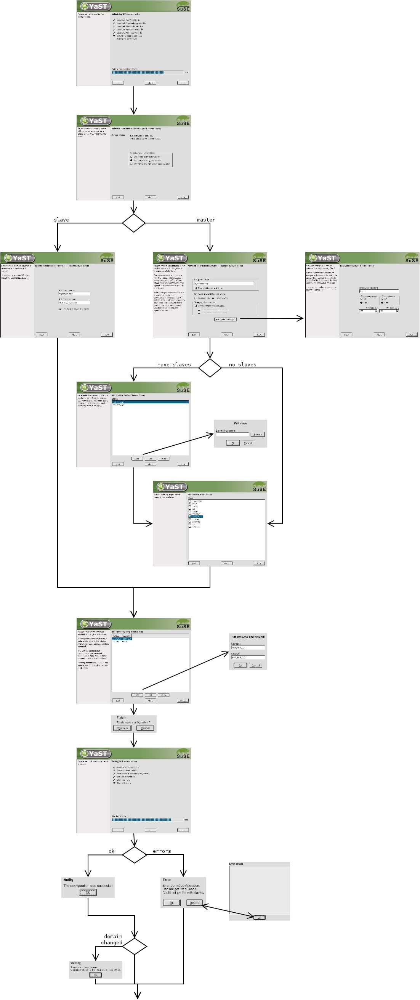
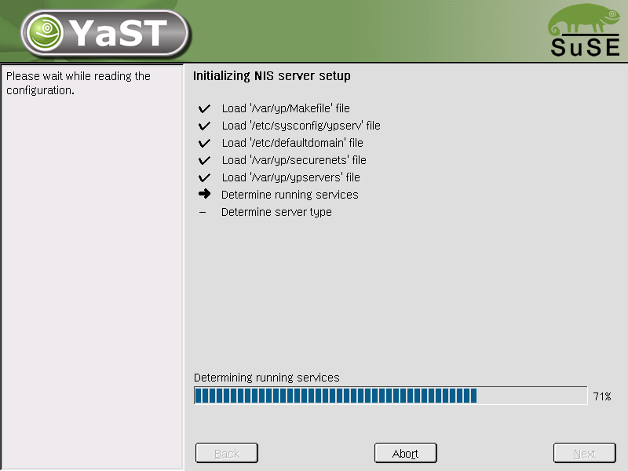
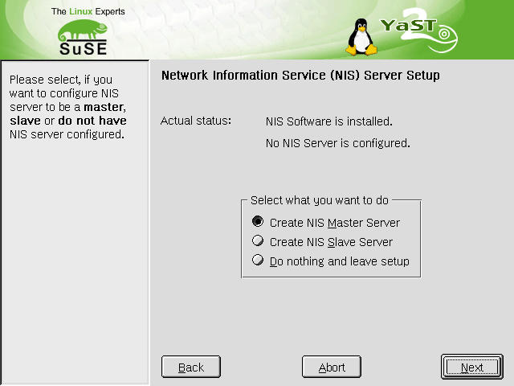
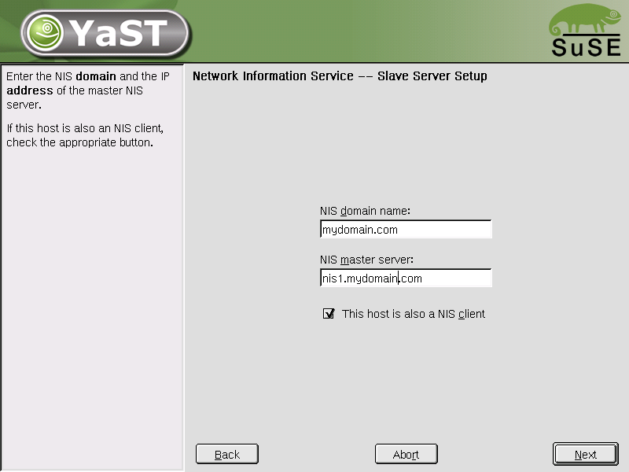
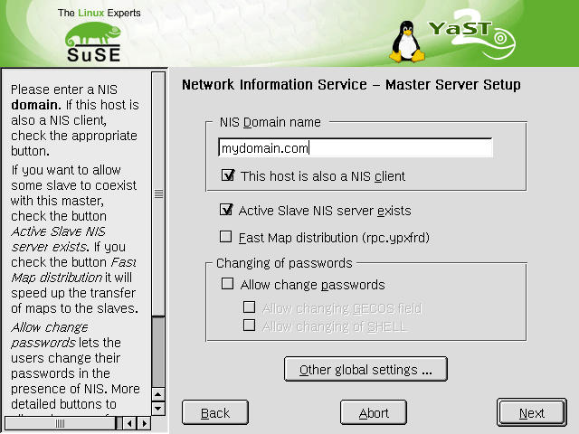
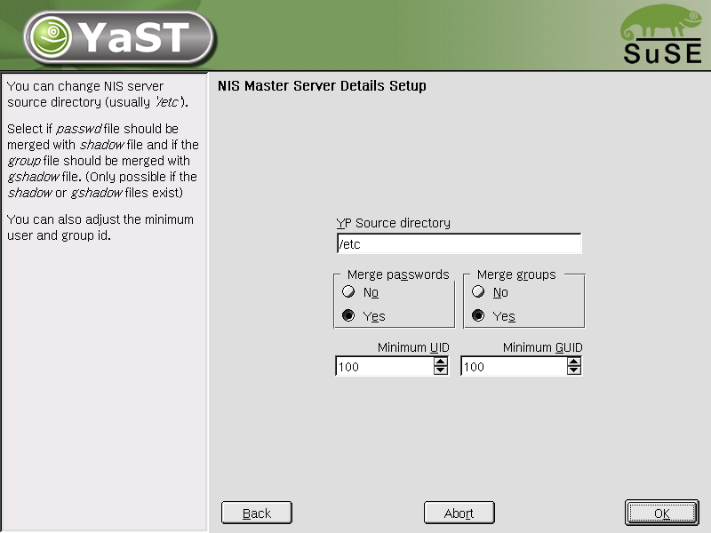
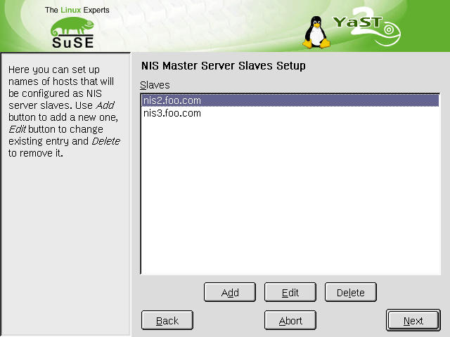, 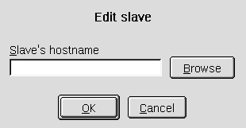
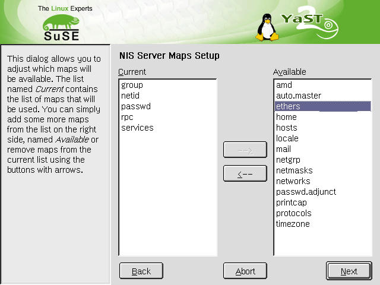
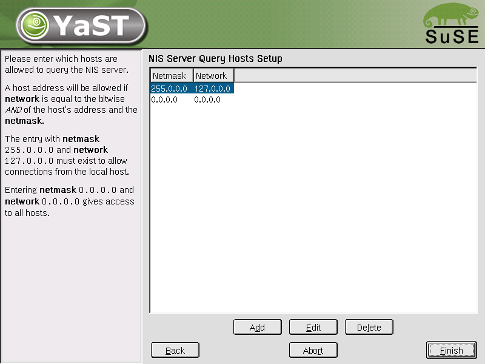, 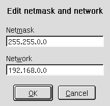
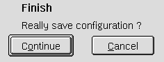
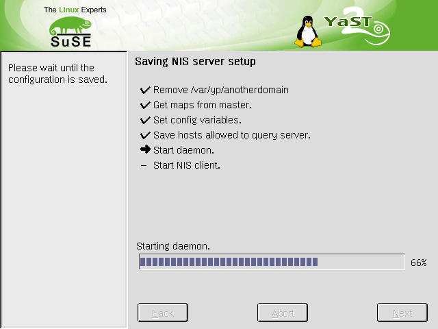
, 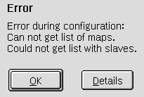, 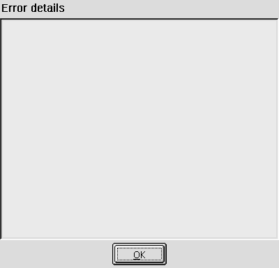
Configuration draft from Thorsten